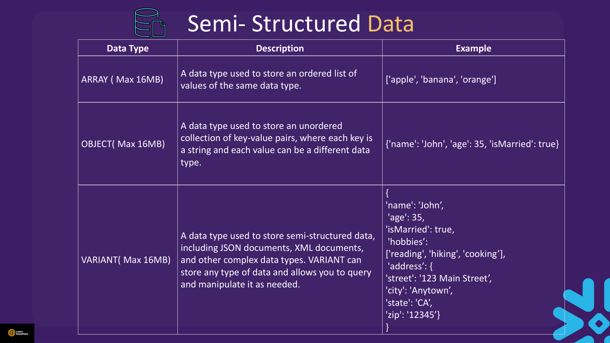
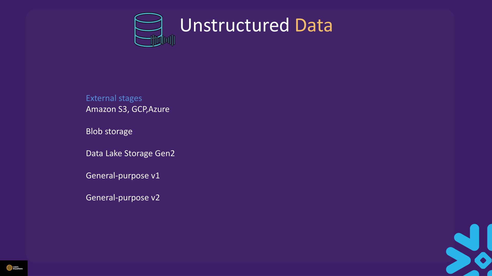
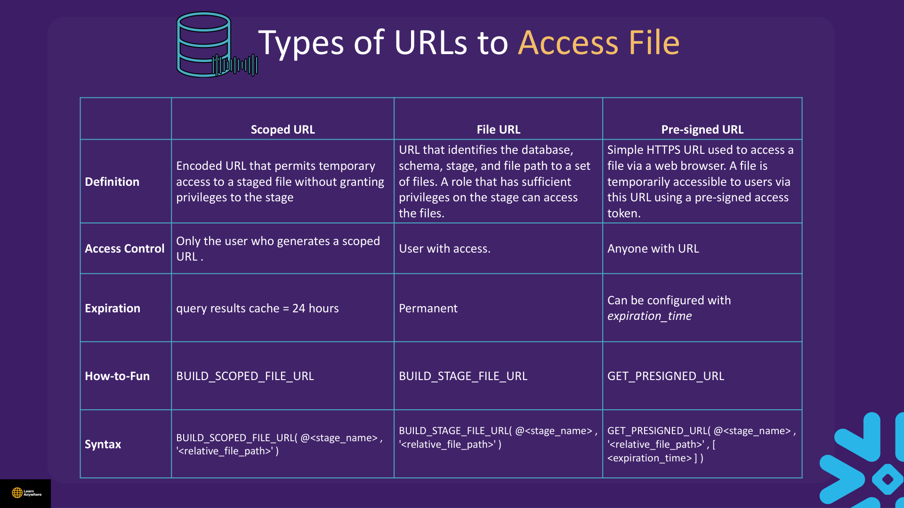

Lectures in this section
Every lecture below links to the notes that cover it. Sample data: data/json_simple.json, data/JSON_ADV.json, and co-branding-agreement PDFs for unstructured demos.
- Semi-structured Data Concept 3:06
- Update 0:03
- Demo : Semi-structured Basics 6:48 Semi- structured and Unstructured data/Semi-structured Basics.txt
- Demo : Semi-structured Data Advance 15:03 Semi- structured and Unstructured data/Semi-structured Data Advance.txt
- Demo : Table to Semi-structured 3:03 Semi- structured and Unstructured data/Table to Semi-structured.txt
- Semi- Structure Data Quiz
- Unstructured Data Concept 4:28
- Demo : Unstructured Data 8:16 Semi- structured and Unstructured data/Unstructured data.txt
- Demo : Directory 3:46 Semi- structured and Unstructured data/Directory.txt
- Predicates 2:04 Semi- structured and Unstructured data/Predicates.txt
- Unstructured Data and Directory Quiz
Semi-structured Data Concept
Relational tables assume fixed columns. Real-world data arrives as JSON logs, nested API responses, and arrays of events. Snowflake stores flexible payloads in VARIANT (and related OBJECT/ARRAY types), then lets you query them with path notation and FLATTEN.
Semi-structured data does not conform to the standards of traditional structured data, but it carries tags or other mark-up that identify distinct entities within the payload. It has no fixed schema and can contain N-level hierarchies of nested information — exactly the shape of JSON, XML, and Avro documents.
Snowflake provides native types ARRAY, OBJECT, and VARIANT, supports querying them with path notation and FLATTEN, and can load and unload several semi-structured file formats. Each native type is capped at 16 MB per value.
| Data type | Description | Example |
|---|---|---|
ARRAY (max 16 MB) |
Ordered list of values of the same data type. | ['apple', 'banana', 'orange'] |
OBJECT (max 16 MB) |
Unordered collection of key-value pairs; each key is a string and each value can be a different type. | {'name': 'John', 'age': 35, 'isMarried': true} |
VARIANT (max 16 MB) |
Universal semi-structured type — JSON, XML, and other complex documents; can hold any type and be queried or manipulated as needed. | {'name': 'John', 'age': 35, 'isMarried': true, 'hobbies': ['reading', 'hiking', 'cooking'], 'address': {'street': '123 Main Street', 'city': 'Anytown', 'state': 'CA', 'zip': '12345'}} |

Supported file formats
Load (COPY INTO table)
- JSON
- Avro
- ORC
- Parquet
- XML
Unload (COPY INTO @stage)
- JSON
- Parquet
Unload support is narrower than load support — only JSON and Parquet can be written back to a stage. That asymmetry is a common exam question.
src:salesperson.name) opens one doll at a time. FLATTEN is like laying every nested doll on the table as separate rows so you can sort and filter them like a normal spreadsheet.
nested document
one row per file
relational rows
VARIANT, OBJECT, and ARRAY. In VARIANT, JSON null is stored as the string "null" — use IS_NULL_VALUE() to detect it. PARSE_JSON throws on invalid JSON; TRY_PARSE_JSON returns NULL instead.
Demo : Semi-structured Basics
Course file: Semi- structured and Unstructured data/Semi-structured Basics.txt
USE ROLE ACCOUNTADMIN;
USE WAREHOUSE COMPUTE_WH;
USE DATABASE la_db;
USE SCHEMA la_schema;
CREATE OR REPLACE FILE FORMAT myjsonformat TYPE = JSON;
CREATE OR REPLACE STAGE my_jsonfile FILE_FORMAT = myjsonformat;
CREATE OR REPLACE TABLE raw_source (src VARIANT);
-- Upload: PUT in SnowSQL, or snow stage copy (CLI) — unavailable in Snowsight SQL
-- PUT file://<local_path>/json_simple.json @my_jsonfile AUTO_COMPRESS=FALSE;
COPY INTO raw_source FROM @my_jsonfile FILE_FORMAT = myjsonformat;
SELECT * FROM raw_source;
-- Bracket notation
SELECT src, src['salesperson']['name'] FROM raw_source;
-- Dot notation (preferred)
SELECT src, src:salesperson.name FROM raw_source;
SELECT src, src:salesperson.name::STRING AS salesperson_name FROM raw_source;
-- Expected from json_simple.json: Frank Beasleydealership = Valley View Auto Sales, salesperson.name = Frank Beasley, customer[0].name = Joyce Ridgely.
-- Inline PARSE_JSON example (different document from the file)
INSERT INTO raw_source
SELECT PARSE_JSON('{
"customer": [{"address": "New York, NY", "name": "Bradley Greenbloom", "phone": "12127593751"}],
"date": "2017-04-28",
"dealership": "Tindel Toyota",
"salesperson": {"id": "274", "name": "Greg Northrup"}
}');
SELECT src:salesperson.name::STRING FROM raw_source WHERE src:dealership::STRING = 'Tindel Toyota';Demo : Semi-structured Data Advance
Course file: Semi- structured and Unstructured data/Semi-structured Data Advance.txt
JSON_ADV.json is a top-level array of department objects with deeply nested Zone → Division → Orders. Use STRIP_OUTER_ARRAY = TRUE so each array element becomes its own row on load.
CREATE OR REPLACE FILE FORMAT myjson_adv
TYPE = JSON STRIP_OUTER_ARRAY = TRUE;
CREATE OR REPLACE STAGE my_json_adv_stage FILE_FORMAT = myjson_adv;
-- PUT file://<local_path>/JSON_ADV.json @my_json_adv_stage AUTO_COMPRESS=FALSE;
TRUNCATE raw_source;
COPY INTO raw_source FROM @my_json_adv_stage FILE_FORMAT = myjson_adv;
SELECT src:Department::STRING AS dept FROM raw_source;
SELECT src, src:Zone[0].SubZone::STRING FROM raw_source;
SELECT src, src:Zone[0].Division[0].Store::STRING FROM raw_source;FLATTEN & lateral joins
SELECT src:Department::STRING AS dept, zone_f.value:SubZone::STRING AS subzone
FROM raw_source,
LATERAL FLATTEN(INPUT => src:Zone) AS zone_f;
CREATE OR REPLACE TABLE dump_json AS
SELECT
src:Department::STRING AS dept_col,
zone.value:SubZone::STRING AS subzone_col,
div.value:Store::STRING AS store_col,
ord.value:SR::STRING AS sr_col,
ord.value:Sales::STRING AS sales_col
FROM raw_source,
LATERAL FLATTEN(INPUT => src:Zone) AS zone,
LATERAL FLATTEN(INPUT => zone.value:Division) AS div,
LATERAL FLATTEN(INPUT => div.value:Orders) AS ord;
SELECT * FROM dump_json;- Forgetting
LATERALbeforeFLATTEN— required in FROM clause. - Using 1-based array indexes — Snowflake arrays are zero-based.
- Loading a JSON array without
STRIP_OUTER_ARRAY = TRUE— entire file becomes one VARIANT row.
Demo : Table to Semi-structured
Course file: Semi- structured and Unstructured data/Table to Semi-structured.txt
Use OBJECT_CONSTRUCT to turn relational rows into JSON objects, then unload to a stage with COPY INTO @stage — the reverse of loading VARIANT.
CREATE OR REPLACE TABLE mytable (
id NUMBER(8) NOT NULL,
first_name VARCHAR(255),
last_name VARCHAR(255),
city VARCHAR(255),
state VARCHAR(255)
);
INSERT INTO mytable VALUES
(1, 'Ryan', 'Dalton', 'Salt Lake City', 'UT'),
(2, 'Upton', 'Conway', 'Birmingham', 'AL'),
(3, 'Kibo', 'Horton', 'Columbus', 'GA');
CREATE OR REPLACE FILE FORMAT myjson_unload TYPE = JSON COMPRESSION = NONE;
CREATE OR REPLACE STAGE my_json_unload_stage FILE_FORMAT = myjson_unload;
COPY INTO @my_json_unload_stage
FROM (
SELECT OBJECT_CONSTRUCT(
'id', id, 'first_name', first_name, 'last_name', last_name,
'city', city, 'state', state
)
FROM mytable
)
FILE_FORMAT = myjson_unload;
LIST @my_json_unload_stage;
-- Parquet export (same pattern)
CREATE OR REPLACE FILE FORMAT myparquet_unload TYPE = PARQUET COMPRESSION = NONE;
CREATE OR REPLACE STAGE my_parquet_stage FILE_FORMAT = myparquet_unload;
COPY INTO @my_parquet_stage
FROM (
SELECT OBJECT_CONSTRUCT('id', id, 'first_name', first_name,
'last_name', last_name, 'city', city, 'state', state)
FROM mytable
)
FILE_FORMAT = myparquet_unload;-- Safe vs strict JSON parse
SELECT TRY_PARSE_JSON('{ invalid json }'); -- returns NULL
-- SELECT PARSE_JSON('{ invalid json }'); -- errorPredicates
Course file: Semi- structured and Unstructured data/Predicates.txt
Type-check VARIANT values before filtering. These functions inspect the JSON value type, not the SQL NULL state.
CREATE OR REPLACE TABLE new_vartab (id NUMBER(3), data VARIANT);
INSERT INTO new_vartab
SELECT column1, PARSE_JSON(column2)
FROM VALUES
(1, '["apple", "banana", "cherry"]'),
(2, '{"name": "John", "age": 30, "is_active": true}'),
(3, 'true'),
(4, '3.14159'),
(5, '100'),
(6, 'null'),
(7, '["1", "2", "3"]'),
(8, '[true, false, null, "string"]'),
(9, '{"address": {"street": "Main St", "city": "Snowflake"}}')
AS vals;
SELECT * FROM new_vartab WHERE IS_ARRAY(data);
SELECT * FROM new_vartab WHERE IS_OBJECT(data);
SELECT * FROM new_vartab WHERE IS_DECIMAL(data);
SELECT * FROM new_vartab WHERE IS_NULL_VALUE(data); -- row 6 (JSON null literal)| Function | Detects |
|---|---|
IS_ARRAY | JSON array |
IS_OBJECT | JSON object |
IS_DECIMAL | JSON number (integer or float) |
IS_NULL_VALUE | JSON null literal (not SQL NULL) |
IS_BOOLEAN | true / false |
Unstructured Data Concept
Unstructured data is information that does not fit into a predefined data model or schema. Domain-specific examples include VCF files in genomics, KDF in semiconductors, and HDF5 in aeronautics — plus everyday files like PDFs, images, and HTML that also lack a fixed column layout.
Snowflake lets you:
- Securely access data files located in cloud storage through external stages.
- Share file access URLs with collaborators and partners.
- Load file access URLs and other file metadata into Snowflake tables (via directory tables).
- Process unstructured data — including Cortex document AI extraction on encrypted stages (see later sections).
External stages for unstructured files
Unstructured files typically live on external stages backed by your cloud object storage rather than Snowflake-managed internal storage. Supported backing services include:
- Amazon S3
- Google Cloud Storage (GCP)
- Microsoft Azure — Blob storage, Data Lake Storage Gen2, and general-purpose v1/v2 storage accounts

Stages should use server-side encryption for document AI features — see advanced Cortex topics in later sections. URL builder functions reference staged files without exposing raw stage credentials.
Demo : Unstructured Data
Course file: Semi- structured and Unstructured data/Unstructured data.txt
Upload co-branding-agreement PDFs (or any sample PDF) to an encrypted internal stage before running URL functions.
CREATE OR REPLACE STAGE internal_un_stage
ENCRYPTION = (TYPE = 'SNOWFLAKE_SSE');
-- PUT file://<local_path>/co-branding-agreement-sample.pdf @internal_un_stage AUTO_COMPRESS=FALSE;
LIST @internal_un_stage;
-- Scoped URL — time-limited, user-scoped access
SELECT BUILD_SCOPED_FILE_URL(@internal_un_stage, 'co-branding-agreement-sample.pdf');
-- Stage file URL — Snowflake-hosted URL
SELECT BUILD_STAGE_FILE_URL(@internal_un_stage, 'co-branding-agreement-sample.pdf');
-- Presigned URL — external access (expires in seconds)
SELECT GET_PRESIGNED_URL(@internal_un_stage, 'co-branding-agreement-sample.pdf', 60);
SELECT GET_STAGE_LOCATION(@internal_un_stage);
SELECT GET_ABSOLUTE_PATH(@internal_un_stage, 'co-branding-agreement-sample.pdf');
SELECT GET_RELATIVE_PATH(@internal_un_stage, 's3://your-bucket/full/path/co-branding-agreement-sample.pdf');
CREATE OR REPLACE SECURE VIEW sample_doc AS
SELECT BUILD_SCOPED_FILE_URL(@internal_un_stage, 'co-branding-agreement-sample.pdf') AS scoped_url;Types of file access URLs
Snowflake provides three URL types for staged files. Each trades off access control, lifetime, and who can open the link.
| URL type | Definition | Access control | Expiration | Function | Syntax |
|---|---|---|---|---|---|
| Scoped URL | Encoded URL that permits temporary access to a staged file without granting privileges on the stage itself. | Only the user who generated the scoped URL. | Tied to query results cache — 24 hours. | BUILD_SCOPED_FILE_URL |
BUILD_SCOPED_FILE_URL(@<stage_name>, '<relative_file_path>') |
| File URL (stage file URL) | URL identifying the database, schema, stage, and file path. Any role with sufficient privileges on the stage can access the files. | Any user with access to the stage. | Permanent (until the file is removed or privileges change). | BUILD_STAGE_FILE_URL |
BUILD_STAGE_FILE_URL(@<stage_name>, '<relative_file_path>') |
| Pre-signed URL | Simple HTTPS URL for browser access; temporarily accessible via a pre-signed access token. | Anyone holding the URL — no Snowflake login required. | Configurable via expiration_time argument (seconds). |
GET_PRESIGNED_URL |
GET_PRESIGNED_URL(@<stage_name>, '<relative_file_path>', [<expiration_time>]) |

GET_PRESIGNED_URL and BUILD_SCOPED_FILE_URL are non-deterministic — each call can return a different token or URL. BUILD_STAGE_FILE_URL and the path helper functions (GET_STAGE_LOCATION, GET_ABSOLUTE_PATH, GET_RELATIVE_PATH) are deterministic.
SNOWFLAKE.CORTEX document functions extract text from PDFs on encrypted stages. Files are accessed via stage URLs — not direct local paths.
Demo : Directory
Course file: Semi- structured and Unstructured data/Directory.txt
A directory table stores file-level metadata about files in a stage. It is an implicit object layered on the stage — not a separate table you create — and can be enabled on internal or external stages. The metadata includes the URL produced by BUILD_STAGE_FILE_URL, so you can catalog staged files and their access paths in SQL.
Enable at stage creation with DIRECTORY = (ENABLE = TRUE), or later with ALTER STAGE … SET DIRECTORY = (ENABLE = TRUE). Query via SELECT * FROM DIRECTORY(@stage). Refresh manually with ALTER STAGE … REFRESH, or enable automatic refresh on external (cloud) stages. No explicit privilege is required to query a directory table beyond access to the underlying stage.
CREATE OR REPLACE STAGE internal_un_stage
ENCRYPTION = (TYPE = 'SNOWFLAKE_SSE')
DIRECTORY = (ENABLE = TRUE);
ALTER STAGE internal_un_stage SET DIRECTORY = (ENABLE = TRUE);
SELECT * FROM DIRECTORY(@internal_un_stage);
ALTER STAGE internal_un_stage REFRESH;
-- External stage directory (S3) — optional AUTO_REFRESH with event notifications
-- DIRECTORY = ( ENABLE = TRUE, REFRESH_ON_CREATE = TRUE, AUTO_REFRESH = TRUE )ALTER STAGE … REFRESH; automatic refresh is available only for external cloud stages. External tables and Iceberg are covered in Section 15.
Practical Lab — json_simple.json & JSON_ADV.json
CREATE DATABASE IF NOT EXISTS study_semi_db;
CREATE SCHEMA IF NOT EXISTS study_semi_db.lab;
USE SCHEMA study_semi_db.lab;
CREATE OR REPLACE STAGE simple_json_stage FILE_FORMAT = (TYPE = JSON);
CREATE OR REPLACE TABLE simple_raw (src VARIANT);
-- PUT + COPY INTO simple_raw FROM @simple_json_stage;
SELECT
src:dealership::STRING AS dealership,
src:salesperson.name::STRING AS salesperson,
src:customer[0].name::STRING AS customer_name
FROM simple_raw;
CREATE OR REPLACE STAGE adv_json_stage
FILE_FORMAT = (TYPE = JSON STRIP_OUTER_ARRAY = TRUE);
CREATE OR REPLACE TABLE adv_raw (src VARIANT);
-- PUT + COPY INTO adv_raw FROM @adv_json_stage;
SELECT
src:Department::STRING AS department,
zone.value:SubZone::STRING AS subzone,
div.value:Store::STRING AS store,
ord.value:SR::STRING AS sales_rep,
ord.value:Sales::NUMBER AS sales
FROM adv_raw,
LATERAL FLATTEN(INPUT => src:Zone) AS zone,
LATERAL FLATTEN(INPUT => zone.value:Division) AS div,
LATERAL FLATTEN(INPUT => div.value:Orders) AS ord
ORDER BY department, store, sales_rep;Expected results
simple_raw: 1 row; dealership =Valley View Auto Sales, salesperson =Frank Beasley.adv_raw: 2 department rows; flatten query returns 8 order rows.
Cleanup
DROP DATABASE IF EXISTS study_semi_db;Interview questions
Try to answer each one before opening it.
What is the difference between VARIANT, OBJECT, and ARRAY in Snowflake?Fundamentals
VARIANT is the universal semi-structured type — it can hold objects, arrays, strings, numbers, booleans, or JSON null in one column. OBJECT and ARRAY are typed variants restricted to JSON objects and arrays respectively, giving stricter schema intent. In practice you load JSON into VARIANT columns and use path notation to extract typed values.
What is the size limit for a single VARIANT value?Fundamentals
A single VARIANT value can be up to 16 MB compressed. Documents or payloads larger than that cannot be stored in one VARIANT cell — split them across rows, store a reference on a stage, or use unstructured file handling instead. This limit applies per value, not per table.
How does Snowflake store semi-structured data internally, and how does that help pruning?Fundamentals
Snowflake stores VARIANT in a compressed columnar format with type information and path metadata inside micro-partitions. When you filter on a extracted path like src:dealership::STRING = 'Tindel Toyota', the engine can skip micro-partitions that cannot contain matching values. You still pay parsing cost on scanned partitions, but pruning reduces how much data is read compared to scanning raw text.
When do you use colon path notation versus bracket notation, and why does :: casting matter?SQL
Colon notation (src:salesperson.name) is the preferred shorthand for nested fields; bracket notation (src['salesperson']['name']) works the same way and is useful when keys contain special characters. Path extraction returns VARIANT — append ::STRING, ::NUMBER, etc. to get a typed SQL value for comparisons and joins. Without casting, filters may behave unexpectedly because you are comparing VARIANT types.
Explain FLATTEN, including LATERAL, OUTER, and RECURSIVE, and the columns it produces.SQL
LATERAL FLATTEN(INPUT => variant_path) unnests arrays or objects into one row per element in the FROM clause. Key output columns are SEQ, KEY, PATH, INDEX, VALUE, and THIS. OUTER => TRUE keeps parent rows even when the array is empty. RECURSIVE => TRUE flattens all nested levels in one pass instead of chaining multiple FLATTEN calls for each hierarchy level.
When do you need STRIP_OUTER_ARRAY = TRUE on a JSON file format?Gotcha
When the JSON file is a top-level array — like JSON_ADV.json where [{…}, {…}] wraps department objects — without stripping, the entire file loads as one VARIANT row containing the whole array. Setting STRIP_OUTER_ARRAY = TRUE emits one row per top-level array element, which is what you want before flattening nested Zone/Division/Orders hierarchies.
What is the difference between IS_NULL_VALUE() and a SQL NULL check on a VARIANT column?Gotcha
JSON null stored in VARIANT is the literal value "null" — the row exists and is not SQL NULL. IS_NULL_VALUE(data) detects that JSON null (row 6 in the predicates demo). data IS NULL checks whether the SQL cell itself is missing. Conflating the two causes rows with JSON null to slip through or be dropped incorrectly.
How do OBJECT_CONSTRUCT and ARRAY_AGG help export relational data to semi-structured form?SQL
OBJECT_CONSTRUCT('key', column, …) builds a JSON object from column values — used in COPY INTO @stage to unload rows as JSON or Parquet objects. ARRAY_AGG(expr) collects values into a JSON array, useful when grouping rows into nested lists. Together they reverse the load path: relational table → semi-structured files on a stage.
What is a directory table, and how do scoped, stage file, and pre-signed URLs differ?Comparison
A directory table catalogs files on a stage via SELECT * FROM DIRECTORY(@stage), enabled with DIRECTORY = (ENABLE = TRUE). BUILD_SCOPED_FILE_URL returns a time-limited URL scoped to the current user's access. BUILD_STAGE_FILE_URL returns a Snowflake-hosted stage URL. GET_PRESIGNED_URL generates an external pre-signed URL with a caller-specified expiry in seconds — suited for handing off temporary access outside Snowflake.
When should unstructured files live in Snowflake versus staying in external object storage?Scenario
Keep files in Snowflake stages when you need secure URL access, directory inventory, or Cortex document AI extraction on encrypted stage files. Leave large static archives in S3/Azure/GCS when Snowflake only needs occasional external table queries or when storage cost and egress dominate. The trade-off is integration and governance inside Snowflake versus cheaper bulk storage outside with connectivity overhead.
Which semi-structured file formats can Snowflake load versus unload?Comparison
Load supports JSON, Avro, ORC, Parquet, and XML. Unload supports only JSON and Parquet. If an exam question asks which formats you can write back to a stage with COPY INTO @stage, the answer is JSON and Parquet — not Avro, ORC, or XML.
Compare scoped URLs, stage file URLs, and pre-signed URLs on access control and expiration.Comparison
Scoped URLs (BUILD_SCOPED_FILE_URL) are visible only to the user who generated them and expire after 24 hours tied to the query results cache. Stage file URLs (BUILD_STAGE_FILE_URL) require stage privileges but are permanent. Pre-signed URLs (GET_PRESIGNED_URL) can be opened by anyone holding the link, with expiry set via the expiration_time argument. The first two URL builders are non-deterministic; stage file URLs are deterministic.
Hands-on practice
Run these in a trial account on an X-Small warehouse with AUTO_SUSPEND = 60. Clean up when you finish.
-
Upload
json_simple.jsonto stagemy_jsonfile, load intoraw_source, and query dealership, salesperson name, and first customer name using colon path notation with::STRINGcasts.One row returned: dealership =
Valley View Auto Sales, salesperson =Frank Beasley, customer name =Joyce Ridgely.Show solutionSQL
USE ROLE ACCOUNTADMIN; USE WAREHOUSE COMPUTE_WH; USE DATABASE la_db; USE SCHEMA la_schema; CREATE OR REPLACE FILE FORMAT myjsonformat TYPE = JSON; CREATE OR REPLACE STAGE my_jsonfile FILE_FORMAT = myjsonformat; CREATE OR REPLACE TABLE raw_source (src VARIANT); -- PUT file://<local_path>/json_simple.json @my_jsonfile AUTO_COMPRESS=FALSE; COPY INTO raw_source FROM @my_jsonfile FILE_FORMAT = myjsonformat; SELECT src:dealership::STRING AS dealership, src:salesperson.name::STRING AS salesperson, src:customer[0].name::STRING AS customer_name FROM raw_source; -
Load JSON_ADV.json with
STRIP_OUTER_ARRAY = TRUE, then flatten Zone → Division → Orders intodump_jsonand count order rows.SELECT COUNT(*) FROM dump_jsonreturns 8 rows across two departments.Show solutionSQL
CREATE OR REPLACE FILE FORMAT myjson_adv TYPE = JSON STRIP_OUTER_ARRAY = TRUE; CREATE OR REPLACE STAGE my_json_adv_stage FILE_FORMAT = myjson_adv; -- PUT file://<local_path>/JSON_ADV.json @my_json_adv_stage AUTO_COMPRESS=FALSE; TRUNCATE raw_source; COPY INTO raw_source FROM @my_json_adv_stage FILE_FORMAT = myjson_adv; CREATE OR REPLACE TABLE dump_json AS SELECT src:Department::STRING AS dept_col, zone.value:SubZone::STRING AS subzone_col, div.value:Store::STRING AS store_col, ord.value:SR::STRING AS sr_col, ord.value:Sales::STRING AS sales_col FROM raw_source, LATERAL FLATTEN(INPUT => src:Zone) AS zone, LATERAL FLATTEN(INPUT => zone.value:Division) AS div, LATERAL FLATTEN(INPUT => div.value:Orders) AS ord; SELECT COUNT(*) FROM dump_json; -
Create
new_vartabwith the predicates demo data and return only rows where the VARIANT holds a JSON object or a JSON null literal.The object query returns rows 2 and 9; the JSON-null query returns row 6 only — not row 6 via
IS NULL.Show solutionSQL
CREATE OR REPLACE TABLE new_vartab (id NUMBER(3), data VARIANT); INSERT INTO new_vartab SELECT column1, PARSE_JSON(column2) FROM VALUES (1, '["apple", "banana", "cherry"]'), (2, '{"name": "John", "age": 30, "is_active": true}'), (3, 'true'), (4, '3.14159'), (5, '100'), (6, 'null'), (7, '["1", "2", "3"]'), (8, '[true, false, null, "string"]'), (9, '{"address": {"street": "Main St", "city": "Snowflake"}}') AS vals; SELECT id FROM new_vartab WHERE IS_OBJECT(data) ORDER BY id; SELECT id FROM new_vartab WHERE IS_NULL_VALUE(data); -
On an encrypted internal stage with a sample PDF, compare
BUILD_SCOPED_FILE_URL,BUILD_STAGE_FILE_URL, andGET_PRESIGNED_URL— note which URLs require Snowflake login and which expire.Scoped URL is user-scoped and cache-bound (24 h); stage file URL is permanent for users with stage access; pre-signed URL works for anyone with the link until
expiration_timeelapses.Show solutionSQL
CREATE OR REPLACE STAGE url_practice_stage ENCRYPTION = (TYPE = 'SNOWFLAKE_SSE'); -- PUT a sample PDF to @url_practice_stage SELECT BUILD_SCOPED_FILE_URL(@url_practice_stage, 'sample.pdf') AS scoped; SELECT BUILD_STAGE_FILE_URL(@url_practice_stage, 'sample.pdf') AS file_url; SELECT GET_PRESIGNED_URL(@url_practice_stage, 'sample.pdf', 3600) AS presigned; -
Clean up semi-structured practice objects: drop
dump_json,new_vartab,raw_source, and the JSON stages and file formats created above.All practice tables, stages, and file formats are removed.
Show solutionSQL
DROP TABLE IF EXISTS dump_json; DROP TABLE IF EXISTS new_vartab; DROP TABLE IF EXISTS raw_source; DROP STAGE IF EXISTS my_json_adv_stage; DROP STAGE IF EXISTS my_jsonfile; DROP FILE FORMAT IF EXISTS myjson_adv; DROP FILE FORMAT IF EXISTS myjsonformat;
Recap
- Semi-structured: no fixed schema; N-level nested hierarchies; native types
ARRAY,OBJECT,VARIANT(16 MB each). - Load formats: JSON, Avro, ORC, Parquet, XML. Unload: JSON and Parquet only.
VARIANTstores any semi-structured value; path access viacol:field.subfieldor brackets.STRIP_OUTER_ARRAY = TRUEfor top-level JSON arrays (JSON_ADV.json).LATERAL FLATTEN(INPUT => …)unnests nested arrays/objects to relational rows.- Predicates:
IS_ARRAY,IS_OBJECT,IS_NULL_VALUE, etc. - Unstructured examples: VCF, KDF, HDF5; external stages on S3, GCS, Azure.
- URLs: scoped (24 h, user-only), file (permanent, stage access), pre-signed (anyone, configurable expiry).
GET_PRESIGNED_URLandBUILD_SCOPED_FILE_URLare non-deterministic.- Directory tables: implicit on stage;
BUILD_STAGE_FILE_URLmetadata; auto-refresh external only.